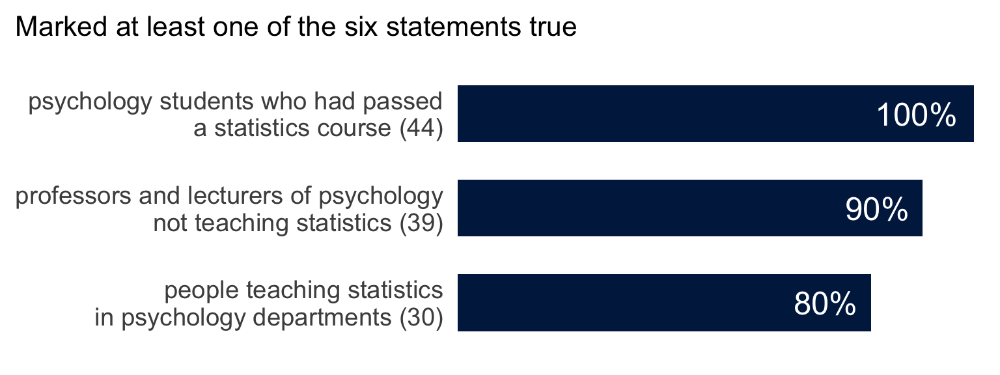
Part 1: Mindless statistics
Part 2: Groups and individuals
Part 3: Sophisticated bigotry
“They’re doing everything right. The form is perfect. It looks exactly the way it looked before. But it doesn’t work. No airplanes land.”
Richard Feynman, “Cargo Cult Science,” Caltech commencement address, 1974.
“… practitioners go through the motions of fitting models, computing p-values or confidence intervals, or simulating posterior distributions. They invoke statistical terms and procedures as incantations, with scant understanding of the assumptions or relevance of the calculations, or even the meaning of the terminology. This demotes statistics from a way of thinking about evidence and avoiding self-deception to a formal ‘blessing’ of claims.”
Stark and Saltelli (2018), “Cargo-cult statistics and scientific crisis,” Significance 15(4). Emphasis added.
Have you seen examples?
“After World War II, governments increased funding for science in response to the assessment that scientific progress is important for national security, prosperity, and quality of life. This increased the scale of science and the pool of scientific labour: science became ‘big science’ conducted by career professionals.”
“The norms and self-regulating aspects of ‘little science’–communities that valued questioning, craftsmanship, scepticism, self-doubt, critical appraisal of the quality of evidence, and the verifiable, and verifiably replicable, advancement of human knowledge–gave way to current approaches centring on metrics, funding, publication, and prestige.”
Stark and Saltelli (2018), “The bigger picture.”
“This has become the norm in many disciplines, reinforced and abetted by statistical education, statistical software, and editorial policies.”
“… many statistics courses–especially ‘service’ courses for non-specialists–teach cargo-cult statistics: mechanical calculations with little attention to scientific context, experimental design, assumptions and limitations of methods, or the interpretation of results.”
“The more ‘powerful’ and ‘user-friendly’ the software is, the more it invites cargo-cult statistics.”
Stark and Saltelli (2018).
A man named Young tried to train rats to go in at the third door along from wherever he started them. They went to the door where the food had been the time before.
He repainted the doors, changed the smell and covered the corridor. They could still tell, by how the floor sounded, until he put the corridor in sand.
Later experimenters ran rats in the old way and did not cite him,
“… because he didn’t discover anything about the rats. In fact, he discovered all the things you have to do to discover something about rats.”
As Feynman tells it in “Cargo Cult Science.”
“Statisticians can help with important, controversial issues with immediate consequences for society. We can help fight power asymmetries in the use of evidence. We can stand up for the responsible use of statistics, even when that means taking personal risks.”
“We should be critical even when the abuses involve politically charged issues …”
Stark and Saltelli (2018), “What can statisticians do?”
“The first principle is that you must not fool yourself–and you are the easiest person to fool.”
“If we only publish results of a certain kind, we can make the argument look good. We must publish both kinds of result. … In other words, publication probability depends upon the answer. That should not be done.”
“Cargo Cult Science.”
You have to choose, so choose, and defend it. Sometimes the mathematics proves that a choice is unavoidable. Pretending it was forced is its own failure.
“Yet the null ritual does not exist in statistics proper.”
The three steps and the sentence are quoted from Gigerenzer and Marewski (2015), “Surrogate Science” (optional reading). “Mindless statistics” is the title of Gigerenzer (2004).
A treatment group and a control group, 20 people in each. A \(t\) test on the difference in means gives \(t = 2.7\), \(p = 0.01\). True or false?
After Oakes (1986) and Haller and Krauss (2002), as given in Gigerenzer (2004). Wording shortened.
All six are false.

1, 3: a test proves nothing. \(\;\) 2, 4, 5: \(P(\text{data} \mid H_0)\) is not \(P(H_0 \mid \text{data})\). \(\;\) 6: the chance that a repeat is significant is its power, which \(p\) does not give.
Six German universities. Percentages as reported in Gigerenzer (2004).
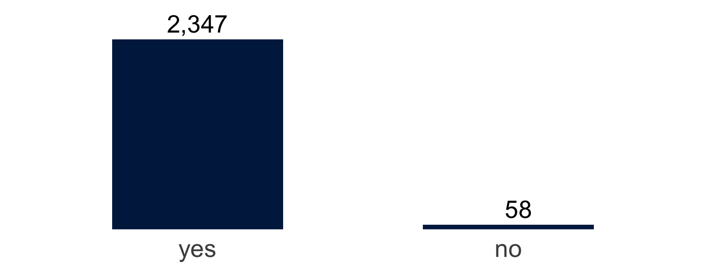
An Internet study asked: “Do you feel there is a difference between altruism and heroism?”
What would you report?
“… there is a significant perceived difference between the ideas of heroism and altruism, \(\chi^2(1) = 2178.60\), \(p < .0001\).”
\[\frac{(2347 - 1202.5)^2}{1202.5} + \frac{(58 - 1202.5)^2}{1202.5} = 2178.6\]
“One of us reviewed an article in which the number of subjects was reported as 57. The authors calculated that the 95% confidence interval was between 47.3 and 66.7 subjects. … The only numbers with no confidence intervals or p values attached were the page numbers.”
The first is Franco, Blau and Zimbardo (2011) as quoted by Gigerenzer and Marewski (2015); the second is Gigerenzer and Marewski’s own.
“Statistical methods are not simply applied to a discipline; they change the discipline itself, and vice versa.”
Gigerenzer and Marewski (2015).
How were \(p\)-values and confidence intervals taught and assessed in your degree?
What are the causes, and what would you change?
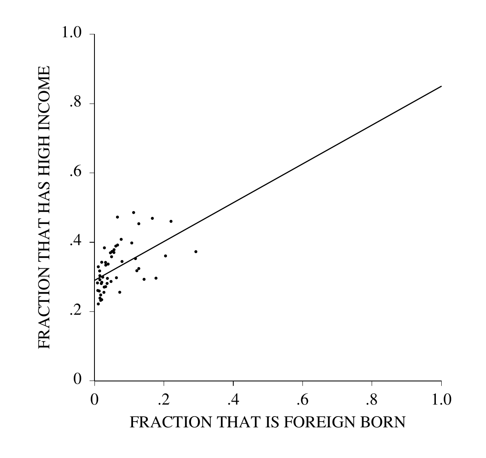
Each point is a US state. March 1995 Current Population Survey, people aged 25 and over. High income: family income of $50,000 or more. From “Ecological Inference and the Ecological Fallacy,” Technical Report 549.
The line is \(y = 0.29 + 0.56\,x\).
According to the line, what fraction of the native-born have high incomes? Of the foreign-born?
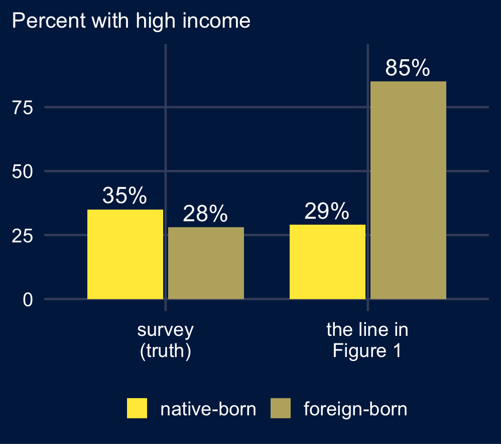
Reading the two ends of the line as the two groups’ rates assumes that neither rate depends on how many immigrants a state has.
“Immigration to the USA tends to concentrate in richer states–California, Hawaii and New York rather than Kentucky, Tennessee and West Virginia.”
Numbers and quotation from Freedman (1999), sections 1 and 3.
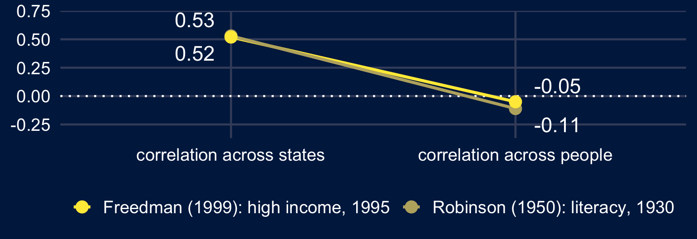
“The ecological fallacy consists in thinking that relationships observed for groups necessarily hold for individuals.”
This is also an example of Simpson’s paradox.
Freedman (1999).
\[R^2 = 1 - \frac{\sum_i (y_i - \hat y_i)^2}{\sum_i (y_i - \bar y)^2}\]
The share of the variation in \(y\), among the units in the regression, that the fitted values account for. With one predictor it is the squared correlation: \(0.52^2 = 0.27\) for the fifty states.
For a line with slope \(\beta\) and noise variance \(\sigma^2\):
\[R^2 = \frac{\beta^2 \operatorname{Var}(X)}{\beta^2 \operatorname{Var}(X) + \sigma^2}\]
“First upon my list I would put the strength of the association.”
Bradford Hill (1965), “The Environment and Disease: Association or Causation?” His measure of strength was a ratio of rates.
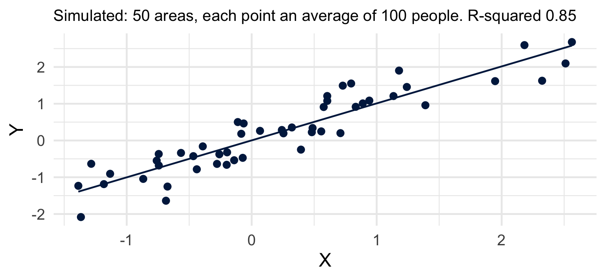
The line through the 5,000 people has the same slope. What is its \(R^2\)?
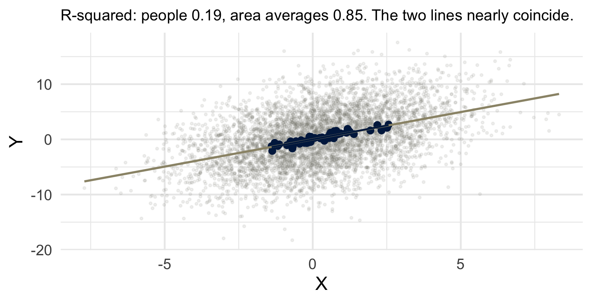
Slope 1 at both levels. \(R^2\): \(\tfrac{5}{5 + 20} = 0.20\) among people, \(\tfrac{1.04}{1.04 + 0.2} = 0.84\) across averages of 100.
Hill’s strength is the strength of a cause’s effect on the units it acts on. His examples were people: a ratio of 200 for chimney sweeps, 9 to 10 for smokers.
A causal effect, if it exists, is observable among the concrete units, people, and not only after aggregation.
An association that appears only after averaging was made by the averaging: the variation within areas is removed, the slope is unchanged. \(R^2\) of 0.20 among people and 0.84 across their averages is one effect, measured twice.
Hill (1965): “we must not be too ready to dismiss a cause-and-effect hypothesis merely on the grounds that the observed association appears to be slight.”
A decision about a person, made from the average of a group they belong to.
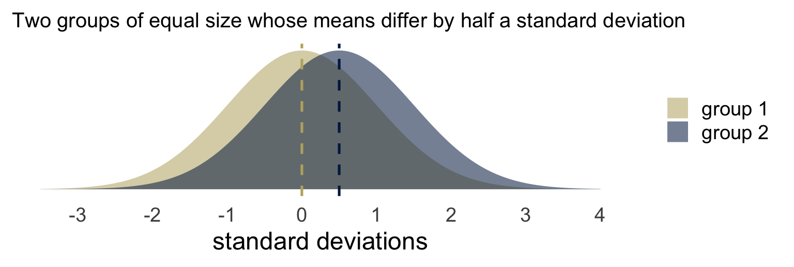
Group membership accounts for 6% of the variance. Take one person from each group at random: the one from the group with the lower mean is the higher of the two 36% of the time.
The errors fall on the people who differ from their group’s average.
If the average is the result of past exclusion, deciding by it continues the exclusion.
Is an aggregate claim about a group ever a claim about a member of it?
Give one case where you think it is and one where it is not.
“… the simple-mindedness of mathematics–its willingness, like that of a computing machine, to elaborate upon any idea, however absurd; to dress scientific brilliancies and scientific absurdities alike in the impressive uniform of formulae and theorems. Unfortunately however, an absurdity in uniform is far more persuasive than an absurdity unclad.”
“The result, perhaps most common in the social sciences, is bad theory with a mathematical passport.”
“The Pernicious Influence of Mathematics on Science.”
“There are issues of intrinsic aptitude, and particularly of the variability of aptitude, and that those considerations are reinforced by what are in fact lesser factors involving socialization and continuing discrimination. It’s talking about people who are 3½, 4 standard deviations above the mean in the one-in-5,000, one-in-10,000 class. Even small differences in the standard deviation will translate into very large differences in the available pool substantially out.”
Then president of Harvard, on why few women hold tenured posts in science and engineering. At a National Bureau of Economic Research conference, as quoted by Hyde and Mertz (2009), who present it as a statement of the Greater Male Variability Hypothesis.
Two groups of equal size with the same mean.
One has a variance 20% larger, which is a standard deviation about 10% larger.
Take the people more than 4 standard deviations above the mean, where the standard deviation is that of the two groups combined. What share of them comes from the lower-variance group?
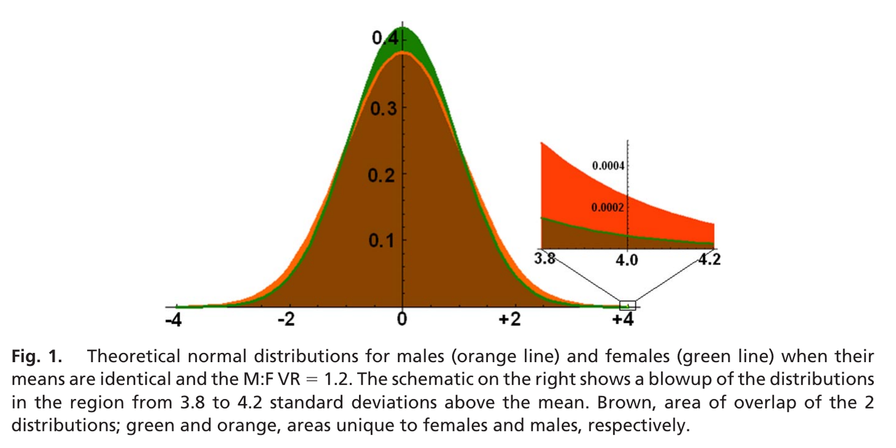
Equal means and a variance ratio of 1.2; the inset is the region from 3.8 to 4.2 standard deviations. “Gender, culture, and mathematics performance,” PNAS 106(22), 8801–8807.
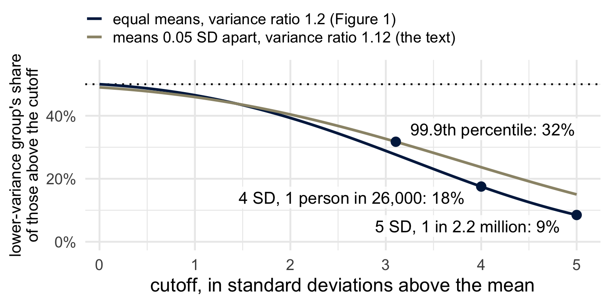
The marked shares are the paper’s own. The fractions of everyone beyond each cutoff are computed from Figure 1’s values; the paper calls the two cutoffs the 1-in-20,000 and 1-in-one million levels.
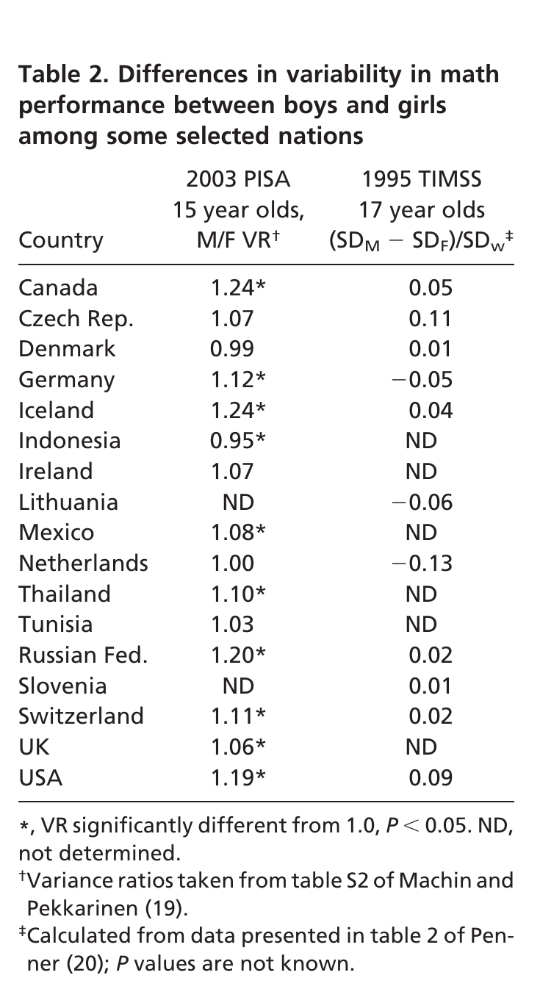
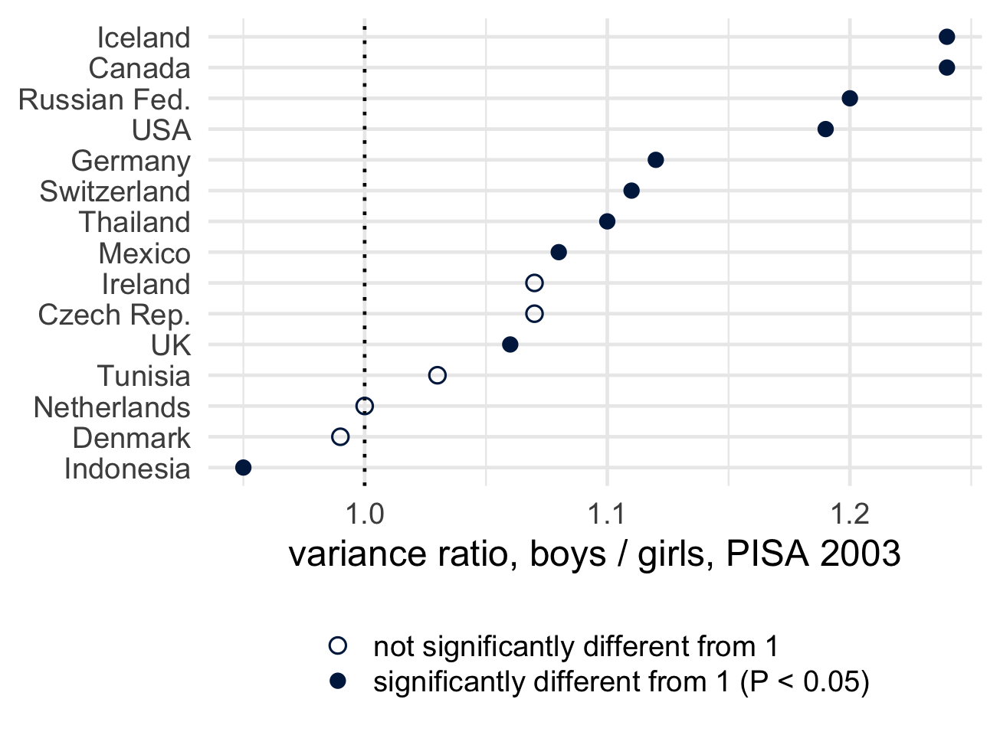
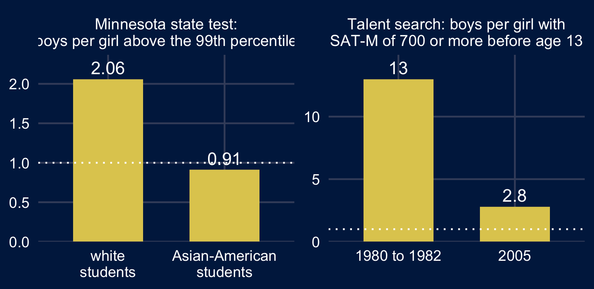
Numbers as reported by Hyde and Mertz (2009). Dotted line: one boy per girl.
The variance argument has a correct calculation in it.
Write down the steps from the calculation to the conclusion. At which step, if any, does the argument fail? What evidence would change your mind?
Does “bigotry” describe any of the steps? Which?
| Step | What it assumes |
|---|---|
| 1. From test scores to a share of a tail | Normal curves, fitted where the data are, hold four standard deviations out. The variance ratio and the mean difference are those of the population in question. The two groups are the same size. |
| 2. From a share of a tail to a share of a profession | The test measures what the work needs. The profession draws from beyond that cutoff. Among people beyond it, the two groups enter the profession at the same rate. |
| 3. From a share to “intrinsic” | The variance ratio is a property of the two groups, and not of the country, the test or the year. |
| 4. From a share of a profession to one applicant | A person can be judged from their group’s share. |
Only step 1 is a calculation. The quotation stops at step 3.
A feed that ranks items shows the far end of a distribution too.
Two groups post items. Each item’s extremity is an independent draw from the same distribution.
One group posts 100 items a day, the other 10,000.
A feed shows you the single most extreme item from each group. How often is the larger group’s item the more extreme of the two?
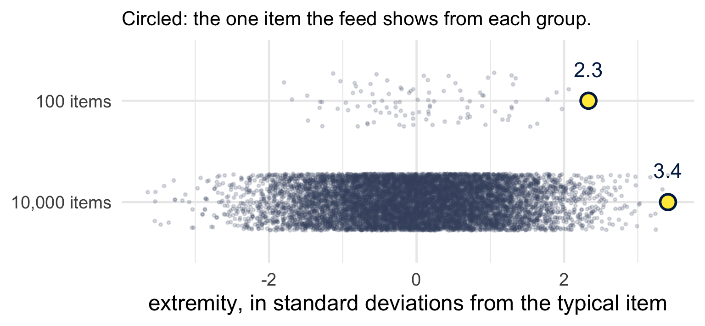
Both groups draw from the same distribution. Each of the 10,100 items is equally likely to be the most extreme, so the larger group’s item is the more extreme of the two with probability \(10{,}000/10{,}100 = 0.99\).
\(P(M_n \le x) = F(x)^n\)
Uniform\((0,1)\): \(\;E[M_n] = \dfrac{n}{n+1}\)
Normal: \(\;E[M_n] = \mu + \sigma\,m_n\)
\(m_{100} = 2.51\)
\(m_{1000} = 3.24\)
\(m_{10{,}000} = 3.85\)
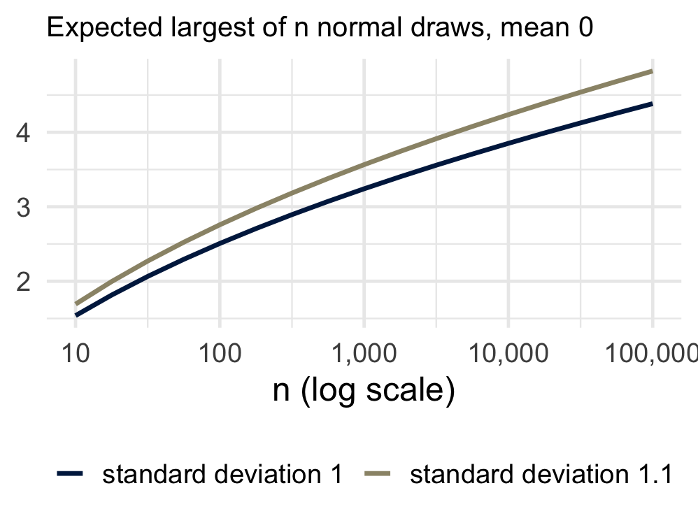
\(P(M_{1000} > 3) = 1 - \Phi(3)^{1000} = 0.74\), \(\quad P(M_{100} > 3) = 1 - \Phi(3)^{100} = 0.13\)
| The calculation gives | It is read as | |
|---|---|---|
| \(p = 0.01\) | how often data this extreme occur when the null hypothesis is true | the chance that the null hypothesis is true |
| a correlation of 0.52 | a relationship across fifty states | a relationship among the people in them |
| an 18% share of a tail | a share of the tail area under two normal curves | the “available pool” for a profession |
…and why?
Who benefited from that choice being invisible? And would a more competent analyst have chosen differently?
Put both questions to the null ritual. Then to the variance argument.